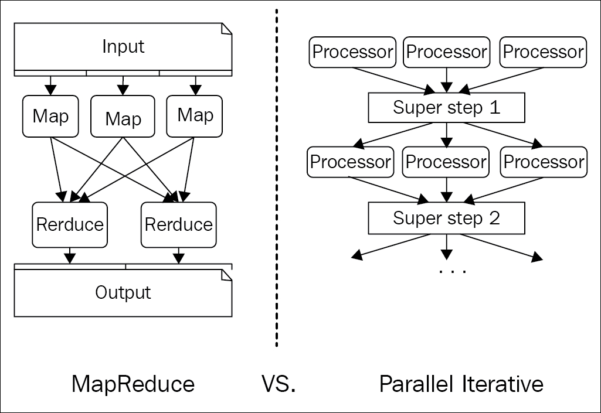
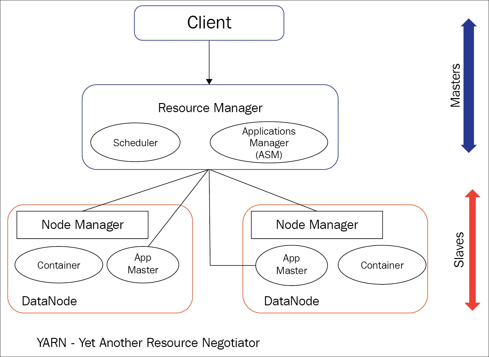
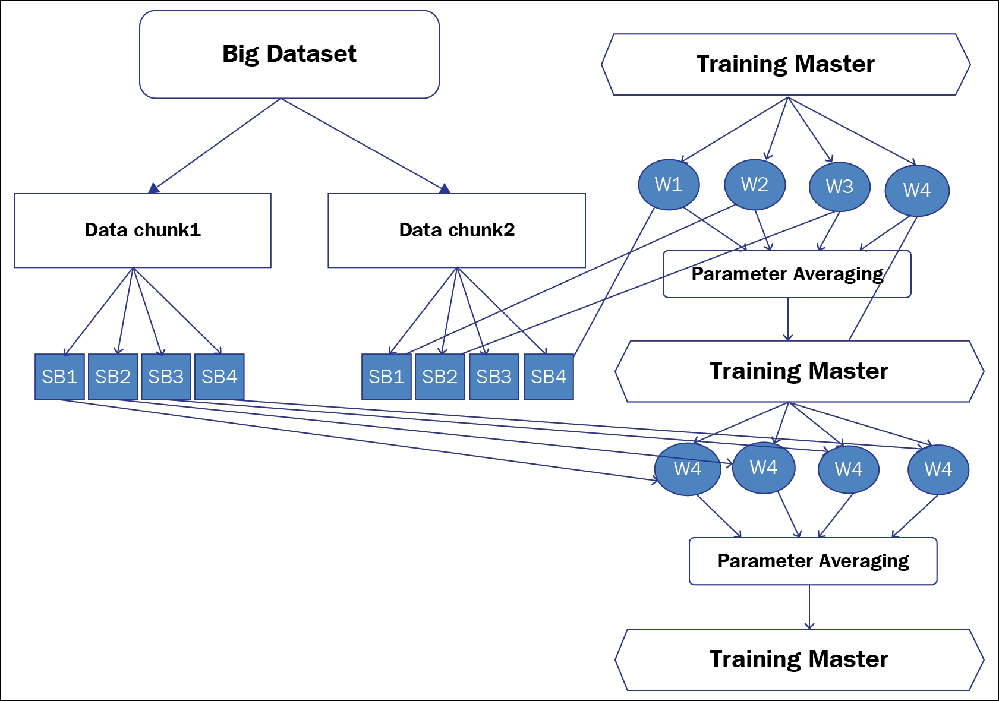

From the earlier sections of this chapter, we already have enough insights on why and how the relationship of deep learning and big data can bring major changes to the research community. Also, a centralized system is not going to help this relationship substantially with the course of time. Hence, distribution of the deep learning network across multiple servers has become the primary goal of the current deep learning practitioners. However, dealing with big data in a distributed environment is always associated with several challenges. Most of those are explained in-depth in the previous section. These include dealing with higher dimensional data, data with too many features, amount of memory available to store, processing the massive Big datasets, and so on. Moreover, Big datasets have a high computational resource demand on CPU and memory time. So, the reduction of processing time has become an extremely significant criterion. The following are the central and primary challenges in distributed deep learning:
There are multiple ways of using distributed deep learning with big datasets. However, when we talk about big data, the framework that is performing tremendously well in defending most of the challenges from the past half decade is the Hadoop framework [77-80]. Hadoop allows for parallel and distributed processing. It is undoubtedly the most popular and widely used framework, and it can store and process the data mountain more efficiently compared to the other traditional frameworks. Almost all the major technology companies, such as Google, Facebook, and so on use Hadoop to deploy and process their data in a sophisticated fashion. Most of the software designed at Google, which requires the use of an ocean of data, uses Hadoop. The primary advantage of Hadoop is the way it stores and processes enormous amount of data across thousands of commodity servers, bringing some well-organized results [81]. From our general understanding of deep learning, we can relate that deep learning surely needs that sort of distributed computing power to produce some wondrous outcomes from the input data. The Big dataset can be split into chunks and distributed across multiple commodity hardware for parallel training. Further more, the complete stage of a deep neural network can be split into subtasks, and then those subtasks can be processed in parallel.
Hadoop operates on the concept that moving computation is cheaper than moving data [86] [87]. Hadoop allows for the distributed processing of large-scale datasets across clusters of commodity servers. It also provides efficient load balancing, has a very high degree of fault tolerance, and is highly horizontally scalable with minimal effort. It can detect and tolerate failures in the application layers, and hence, is suitable for running on commodity hardware. To achieve the high availability of data, Hadoop, by default, keeps a replication factor of three, with a copy of each block placed on two other separate machines. So, if a node fails, the recovery can be done instantly from the other two nodes. The replication factor of Hadoop can be easily increased based on how valuable the data is and other associated requirements on the data.
Hadoop was initially built mainly for processing the batch tasks, so it is mostly suitable for deep learning networks, where the main task is to find the classification of large-scale data. The selection of features to learn how to classify the data is mainly done on a large batch of datasets.
Hadoop is extremely configurable, and can easily be optimized as per the user's requirements. For example, if a user wants to keep more replicas of the data for better reliability, he can increase the replication factor. However, an increase in the number of replicas will eventually increase the storage requirements. Here we will not be explaining more about the features and configuration of data, rather we will mostly discuss the part of Hadoop which will be used extensively in distributed deep neural networks.
In the new version of Hadoop, the parts which we will mainly use in this book are HDFS, Map-Reduce, and Yet Another Resource Negotiator (YARN). YARN has already dominated Hadoop's Map-Reduce (explained in the next part) in a large manner. YARN currently has the responsibility to assign the works to the Data nodes (data server) of Hadoop. Hadoop Distributed File System (HDFS), on the other hand, is a distributed file system, which is distributed across all the Data nodes under a centralized meta-data server called NameNode. To achieve high-availability, in the later version, a secondary NameNode was integrated to Hadoop framework, the purpose of which is to have a copy of the metadata from primary NameNode after certain checkpoints.
The Map-Reduce paradigm [83] is a distributed programming model developed by Google in 2004, and is associated with processing huge datasets with a parallel and distributed algorithm on a cluster of machines. The entire Map-Reduce application is useful with large-scale datasets. Basically, it has two primary components, one is called Map and the other is called Reduce, along with a few intermediate stages like shuffling, sorting and partitioning. In the map phase, the large input job is broken down into smaller ones, and each of the jobs is distributed to different cores. The operation(s) are then carried out on every small job placed on those machines. The Reduce phase accommodates all the scattered and transformed output into one single dataset.
Explaining the concept of Map-Reduce in detail is beyond the scope of this chapter; interested readers can go through "Map-Reduce: Simplified data processing on large clusters" [83] to get an in-depth knowledge of this.
The deep learning algorithms are iterative in nature - the models learn from the optimization algorithms, which go through multiple steps so that it leads to a point of minimal error. For these kinds of models the Map-Reduce application does not seem to work as efficiently as it does for other use-cases.
Iterative Map-Reduce, a next generation YARN framework (unlike the traditional Map-Reduce) does multiple iterations on the data, which passes through only once. Although the architecture of Iterative Map-Reduce and Map-Reduce is dissimilar in design, the high level of understanding of both the architectures is simple. Iterative Map-Reduce is nothing but a sequence of Map-Reduce operations, where the output of the first Map-Reduce operation becomes the input to the next operation and so on. In the case of deep learning models, the map phase places all the operations of a particular iteration on each node of the distributed systems. It then distributes that massive input dataset to all the machines in the cluster. The training of the models is performed on each node of the cluster.
Before sending the aggregated new model back to each of the machines, the reduce phase takes all the outputs collected from the map phase and calculates the average of the parameters. The same operations are iterated over and over again by the Iterative Reduce algorithm until the learning process completes and the errors minimize to almost zero.
Figure 2.4 compares the high-level functionalities of the two methods. The left image shows the block diagram of Map-Reduce, while on the right, we have the close-up of Iterative Map-Reduce. Each 'Processor' is a working deep network, which is learning on small chunks of the larger dataset. In the 'Superstep' phase, the averaging of the parameters is done before the entire model is redistributed to the whole cluster as shown in the following diagram:

Figure 2.4: Difference of functionalities in Map-Reduce and parallel iterative reduce
The primary idea of YARN is to dissociate job scheduling and resource management from the data processing. So the data can continue to process in the system in parallel with the Map-Reduce batch jobs. YARN possesses a central resource manager, which mostly manages the Hadoop system resources according to the need. The node manager (specific to nodes) is responsible for managing and monitoring the processing of individual nodes of the cluster. This processing is dedicatedly controlled by an ApplicationMaster, which monitors the resources from the central resource manager, and works with the node manager to monitor and execute the tasks. The following figure gives an overview of the architecture of YARN:

Figure 2.5: An overview of the high-level architecture of YARN
All these components of Hadoop are primarily used in distributed deep learning to overcome all the challenges stated earlier. The following subsection shows the criteria that need to be satisfied for better performance of distributed deep learning.
the following are the important characteristics of distributed deep learning design:
For example, say the master node of YARN is coordinating 20 worker nodes for a Big dataset of 200 GB. The master node will split the dataset into 10 GB of 20 small batches of data, allocating one small batch to each worker. The workers will process the data in parallel, and send the results back to the master as soon as it finishes the computing. All these outcomes will be aggregated by the master node, and the average of the results will be finally redistributed to the individual workers.
Deep learning networks perform well with small batches of nearly 10, rather than working with 100 or 200 large batches of data. Small batches of data empower the networks to learn from different orientations of the data in-depth, which later on recompiles to give a broader knowledge to the model.
On the other hand, if the batch size is too large, the network tries to learn quickly, which maximizes the errors. Conversly, smaller batch size slows down the speed of learning, and results in the possibility of divergence as the network approaches towards the minimum error rate.
The sequential process of parameter averaging can be outlined as follows:
Figure 2.6 shows a combined diagrammatic overview of the small batch processing and parameter averaging operation:

Figure 2.6: Figure shows the high level architecture of a distributed deep learning architecture